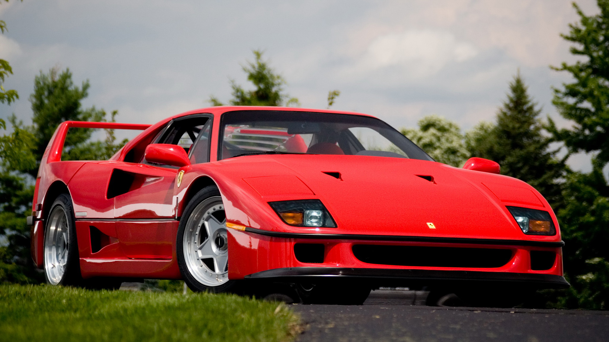

Baseada na Ferrari 288 Evoluzione - um protótipo focado em corridas -, a F40 é um dos modelos mais admirados da Ferrari e, de início, a intenção da marca italiana era produzir um carro icônico, e assim foi feito. O modelo revolucionou nos materiais usados para sua construção, sendo uma das pioneiras do uso de fibra de carbono e Kevlar que, combinados com a falta de itens de conforto, fizeram da F40 um carro leve quando comparado aos outros supercarros da época.O motor V8 central e seu câmbio manual de 5 marchas garantem ao carro uma velocidade máxima de 323km/h, que, para a época, era a maior alcançada por um carro feito para as ruas, garantindo ao motorista uma sensação pura de direção, sendo esse um dos principais motivos para a Ferrari F40 ser tão especial entre os entusiastas.